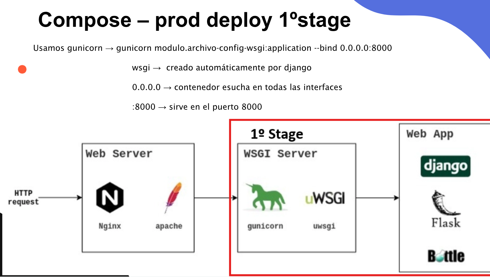
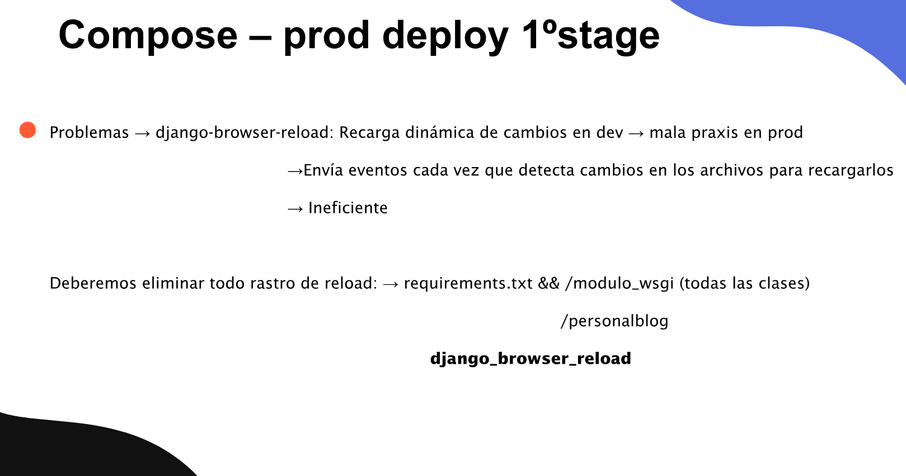

DAPW · Tarea
COMPOSE - PROD STAGE 1
Instrucciones
Continúa sobre el repositorio de Dev Stage del blog que Laura hizo con Lidia en Backend de segundo de DAW. Esta es la segunda de las tres etapas de dockerización.
Objetivo de esta etapa
Integra únicamente la parte recuadrada en rojo en la primera captura: Gunicorn como servidor WSGI y la aplicación Django. Amplía los archivos Docker y Compose de la práctica anterior para sustituir el servidor de desarrollo. Nginx se añadirá en Prod Stage 2.
Trabajo a realizar
- Añade Gunicorn a las dependencias de producción y úsalo como proceso de arranque del servicio de la aplicación.
- Localiza el módulo real
personalblog/wsgi.pyy su objetoapplication. El comando de referencia para este proyecto es:
gunicorn personalblog.wsgi:application --bind 0.0.0.0:80000.0.0.0 permite escuchar en las interfaces del contenedor y 8000 es el puerto de la aplicación. Ejecuta el proceso desde el directorio del proyecto, donde está manage.py.
- Prepara la configuración de producción de Django: desactiva
DEBUGy configura los hosts con los que vas a acceder a la práctica enALLOWED_HOSTS. - Retira
django-browser-reloadde las dependencias de producción y de las referencias activas del proyecto. En el ZIP aparece enINSTALLED_APPSyMIDDLEWARE, dentro depersonalblog/settings.py, y en la ruta__reload__/depersonalblog/urls.py. - Comprueba que el contenedor arranca con Gunicorn y que las peticiones llegan a Django. Documenta los cambios respecto a Dev Stage y conserva el trabajo del blog.
En esta etapa se comprueba el funcionamiento de Gunicorn y Django. Con esta configuración, Gunicorn no proporciona el servicio de estáticos que ofrecía runserver: la integración de CSS, Tailwind e imágenes mediante Nginx se completa en la siguiente tarea.

Ver diapositiva 136 ↗

Ver diapositiva 137 ↗
Entrega
Adjunta el enlace al mismo repositorio, actualizado, y amplía el README.md con el comando de Gunicorn, los archivos modificados, la retirada de la recarga y capturas de los contenedores, los registros y la aplicación respondiendo. Explica qué queda pendiente para Prod Stage 2.